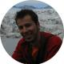

Equip Tècnic
|
Pere Buil (1973): Arquitecte per l’ETSAB (Barcelona, 2000). Fundador de vora arquitectura, estudi amb seus a Barcelona i a Lisboa. Els seus projectes han estat publicats en diverses revistes internacionals. Han estat premiats amb, entre d’altres, els premis Bonaplata i Arco i seleccionats per Arquia/próxima 2010. Des del 2008 és co-comissari d’ “Estacions transformadores”, una plataforma de debats mensuals situada a la Nau Ivanow. Va ser professor convidat a l’ESARQ (Barcelona) durant el Taller Vertical 2009 dirigit Emilio Tuñón i Luís M. Mansilla. Actualment és professor de Projectes a l’ETSALS (Barcelona) i al MBIArch, màster d’arquitectura del BIArch (Barcelona). |
|
|
Joan Vitòria (1973): Arquitecte per l’ETSAB (Barcelona, 2001). Ha treballat com arquitecte de forma independent i també en diversos estudis a Barcelona i París. Des del 2007 és professor de Projectes a l’ESARQ (Barcelona), on també és co-organitzador dels Foros ESARQ i coordinador del Departament de Cultura i Publicacions. Des del 2005 també treballa en el camp de la divulgació d'arquitectura organitzant tota mena activitats (tallers, visites, exposicions,...), primer des del Servei Educatiu (SEA) del COAC i després des del col·lectiu "El globus vermell", el qual ha col·laborat amb diversos centre culturals de Barcelona (Fundació Joan Miró, La Pedrera, DHUB,...). |
|
|  |
Carlos Cámara (1980): Arquitecte per l'ETSAV (Sant Cugat, 2004). Combina la docència amb la recerca i l'experimentació amb tècniques informàtiques i de comunicació aplicades a l'arquitectura. Actualment és professor de la Universidad de San Jorge (Saragossa) i consultor de l'Escola Sert del COAC. Ha creat i desenvolupat ArchTLAS, un atlas de arquitectura on-line colaborativo i ha treballat a l'agència d'arquitectura Scalae, on va co-comissariar l'exposició "44 jóvenes arquitectos" i va dirigir la revista ArquitecturaPlus editada pel Grupo Vía entre 2007 i 2008. Va ser professor convidat a l'ESARQ (Barcelona) durante el Taller Vertical 2009 dirigit per Emilio Tuñón i Luís M. Mansilla. |
|
Laura Bayo (Barcelona,1973). Llicenciada en Periodisme (UAB) i Màster en Direcció de comunicació per EAE-UPC (2000). La seva trajectòria professional s’ha centrat en la difusió de l’arquitectura i el disseny. Ha estat responsable de comunicació i premsa del FAD (1998-2003) i del COAC (2004-2008). Ha estat responsable de premsa deI Festival EME3 d’Arquitectura (2003) i del despatx d’arquitectura Cloud9 (2003-2004). Ha col·laborat en l’àmbit Arquitectura del “Festival Fabbrica Europa de Florència (2004) i amb la V Biennal d’Arquitectura de Sao Paolo, (2004), entre d’altres. Actualment treballa a l’administració local en temes de comunicació i segueix vinculada a la difusió creativa col·laborant amb el FAD, Elisava i l’Associació Antena. |
|
vora arquitectura va néixer l'any 2000 a lisboa, de la mà de pere buil castells i jordi fornells castelló. en el 2004 s'hi va incorporar toni riba galí. som un estudi de joves arquitectes que varem cursar a l'escola tècnica superior d'arquitectura de barcelona [etsab]. mantenim infraestructura a barcelona i lisboa, tot i que el treball més important el realitzem a catalunya. treballem en edificació i disseny urbà, en diferents escales i tipologies. el nostre treball ha rebut diversos reconeixements i ha estat publicat en revistes a nivell internacional. la nostra aproximació al procés de disseny i construcció és abstracta i material. estem interessats en la reducció i la materialitat com a resposta als reptes actuals. |
|
Toormix és un estudi creatiu especialitzat en direcció d’art i disseny gràfic ubicat a Barcelona. Creat l’any 2000 per Ferran Mitjans i Oriol Armengou, desenvolupen identitats corporatives, publicacions i disseny editorial, websites i projectes de comunicació per a tot tipus de clients, des de petits treballs gràfics fins a projectes globals de branding, disseny gràfic i comunicació.La recerca i l’estratègia són part del seu procés de treball natural. Creen nous codis i busquen nous formes de comunicació visual a través de conceptes creatius clars per assolir objectius específics.Entre els seus clients destaquen, entre d’altres Camper, Desigual, l’Ajuntament de Barcelona, el Govern espanyol, la Universitat de Barcelona, la Spain USA Foundation o el xef José Andrés (Thik Food Group). |
|
Nèlida Falcó. (Barcelona, 1974). Llicenciada en Filologia per la UB (1999) i amb un Màster en Gestió Cultural per la UB (2000), compta amb deu anys d’experiència en la direcció, planificació, coordinació i gestió de projectes expositius i de divulgació cultural relacionats amb l’àmbit de l’art, el disseny i l’arquitectura. Des de 2001 ocupa el càrrec de directora de la Fundació Signes i col·labora amb museus i institucions nacionals i internacionals dirigint i coordinant projectes museogràfics. El Disseny Hub Barcelona (2008-2010), la Fundació Caixa Catalunya (2008), la Sociedad Estatal de Exposiciones Internacionales (SEEI) o el FAD. Foment de les Arts i el Disseny (2001-2009), són algunes de les institucions i entitats amb les quals ha col·laborat. |
|
Pedro Duarte Bento (1976): Arquitecte, artista i dinamitzador cultural. Títol d'arquitectura per la FAUTL (Lisboa) i màster en Arts Visuals. Ha treballat com a arquitecte a New York (SOM, Field Operations, REDTOP Architects) i Barcelona (MAP Architects-Josep Lluís Mateo). Va obtenir una beca de la Fundaçao Orient (2005) per fotografiar les indústries de desballestament de vaixells a l'Índia i Bangla Desh. Des de 2008 ha desenvolupat un treball de fotografia contemporània, exposat en diversos llocs i adquirit en col·leccions publiques. |
|
Adriana Salvat Torregrosa (Barcelona, 1975): Arquitecta per l’ETSAB i postgraduada en Antropologia Visual per la UB, combina el treball com a arquitecta amb la realització de vídeo. En el camp de l'audiovisual ha realitzat documentals com “Trenta metres i un balcó” on s'explora l'espai domèstic i social dels 'quarts de casa' de la Barceloneta, “La terra que no trepitgem” fruit d'una recerca etnogràfica sobre la construcció amb tàpia a les terres de Lleida i diversos treballs audiovisuals relacionats amb la Llei de Barris. Actualment està realitzant un documental sobre el creixement i la transformació urbana de Barcelona. En l'àmbit acadèmic ha participat en diversos tallers audiovisuals relacionats amb l'arquitectura i l'urbanisme. |